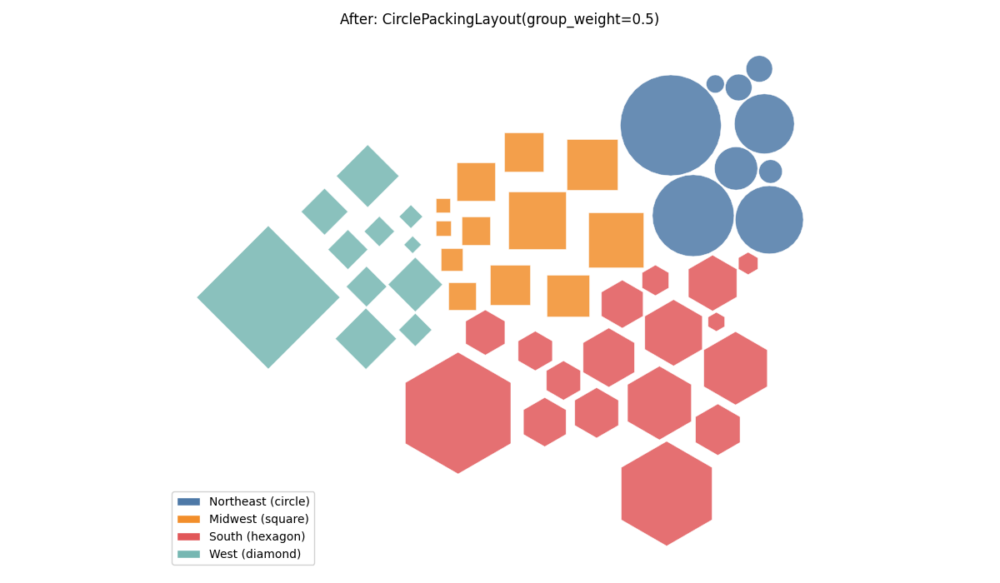
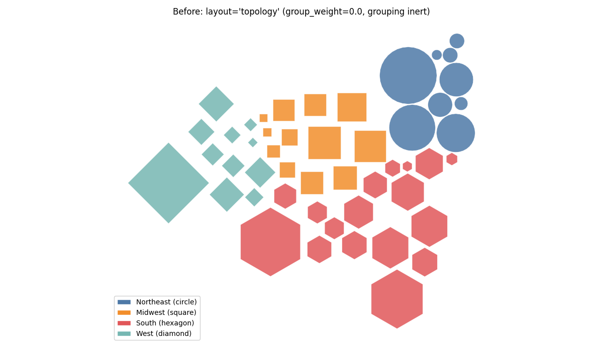

Six documentation defects — two examples that cannot execute, two inert-grouping warnings that render into the published pages, and explanation prose written as decision history or one-off result figures.
Only one item changes rendered output: the group_by cell in docs/how-to/tile-count-maps.ipynb. The figures above are that cell's plot, built from the same styling code on both sides.
The other five items change text, imports or parameter values that were wrong:
| Item | File | Defect |
|---|---|---|
| 1 | docs/reference/symbol_cartogram/index.md | preset_tile_map does not exist; presets return a SymbolCartogram, not a kwargs dict |
| 2 | docs/explanations/symbol-cartogram-circle-packing.md | import from symbol_cartogram.placement, a module that does not exist |
| 3 | docs/how-to/tile-count-maps.ipynb | inert group_by; warning in the page, prose false |
| 4 | docs/reference/symbol_cartogram/index.md | same inert group_by |
| 5 | docs/explanations/symbol-cartogram-mosaic-layout.md | history and result figures in an explanation; two undocumented behaviors |
| 6 | docs/explanations/symbol-cartogram-pipeline.md | inert-grouping warnings undocumented |
| 7 | docs/explanations/symbol-cartogram-circle-packing.md | how the force weights relate was undocumented; the group force was missing from the force-component list |
Grouping is on in the "after" figure, so the effect to look for is placement, not color or shape — those are identical on both sides.
With group_weight=0.5 each cluster closes up a little: the West diamonds sit in a tighter diagonal band, the Midwest squares pack into a block rather than a loose row, and the seam between Midwest and South is cleaner. Overall geographic arrangement is preserved — the map still reads as the United States, Alaska and Hawaii still sit off to the west — so the grouping pull is not fighting the origin attraction at this weight.
Nothing about the result looks worse. The change is modest, and the reason is now documented rather than left for the reader to guess: the neighbor force already holds contiguous groups together, and it is summed over each region's neighbors while the group pull is applied once per symbol, so a group_weight numerically equal to neighbor_weight is the weaker of the two by roughly the mean neighbor count. On US states that mean is about 4.5 (range 1 to 8), so group_weight=0.5 against the default neighbor_weight=1.0 is close to a 1:9 contest. It is enough to make the narrative true; it is not enough to rearrange the map, which is the right trade for a how-to whose subject is styling rather than placement.
The amplification depends on the adjacency values, not on the force: under adjacency_mode=WEIGHTED or AREA_WEIGHTED the pair weights sum to about 1 per region and the pair forces land back on the same scale as the per-circle ones.
kernel_name="python3", allow_errors=False):no errors, and no UserWarning in any cell output.
uv run mkdocs build -s, docs/generated/ deleted first.make check clean, 712 tests pass.
After: layout=sym.CirclePackingLayout(group_weight=0.5). No warning, and same-region states are actually drawn together.

Before: create_layout(..., group_by="Region", layout="topology"). group_weight defaults to 0.0, so the grouping never reaches placement and the layout warns. The symbol shapes are grouped; the positions are not.